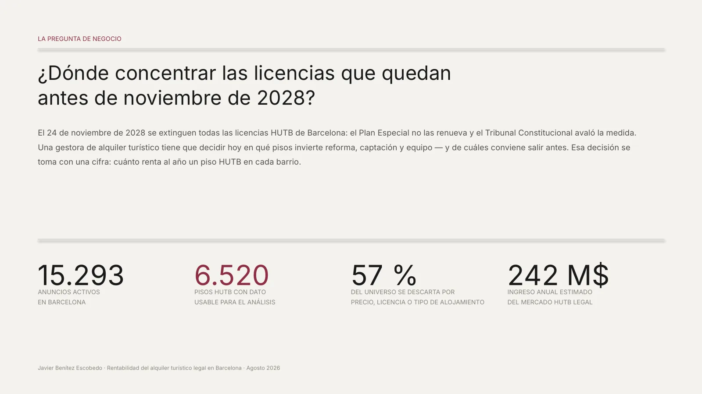
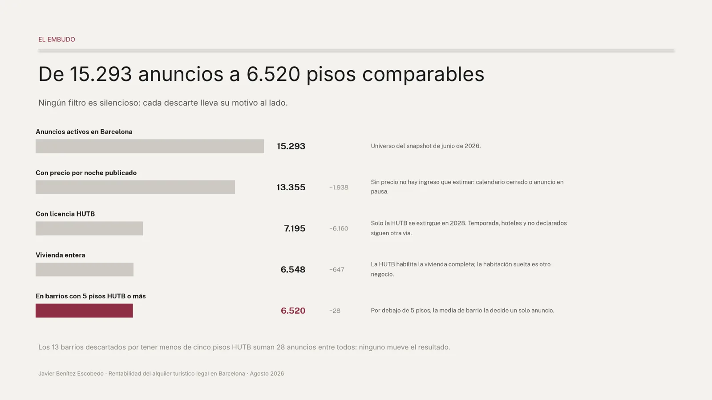
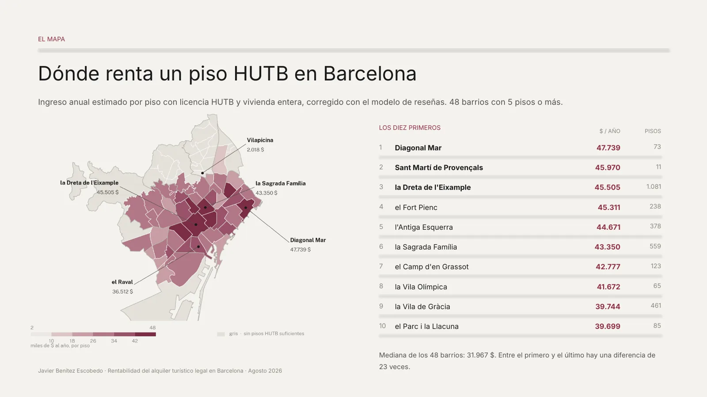
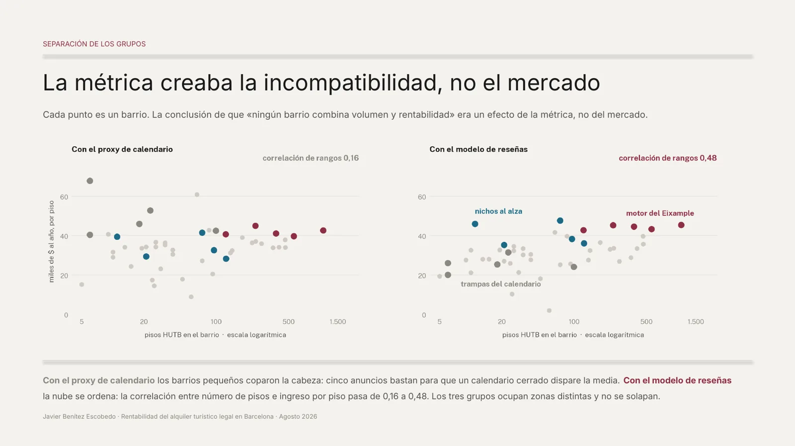
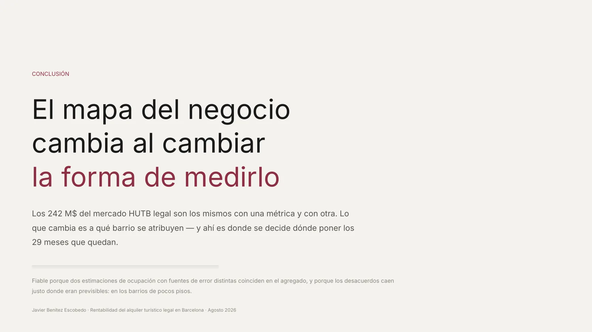

15.293
anuncios activos en Barcelona
6.520
pisos HUTB con dato usable
57 %
del universo se descarta por precio, licencia o tipo de alojamiento
242 M $
de ingreso anual estimado del mercado HUTB legal
La pregunta de negocio
¿Dónde concentrar las licencias que quedan antes de noviembre de 2028?
El 24 de noviembre de 2028 se extinguen todas las licencias HUTB de Barcelona: el Plan Especial no las renueva y el Tribunal Constitucional avaló la medida.
Para quién: una gestora de alquiler turístico que tiene que decidir hoy en qué pisos invierte reforma, captación y equipo, y de cuáles salir antes.


El mercado hoy
Menos de la mitad de los anuncios con precio tiene licencia HUTB.
De 13.355 anuncios con precio, solo el 48,7 % tiene licencia HUTB (7.195 anuncios, los que desaparecen en 2028). El 25,4 % ya está en alquiler de temporada, una figura que 2028 no toca. El 19,9 % no declara información (no necesariamente irregular).
La métrica y su ajuste
Ingreso anual estimado por piso.
Fórmula del panelprecio por noche × (365 − noches disponibles)
Qué señala
El techo de ingreso bruto si cada noche bloqueada fuese una noche vendida.
Qué no es
No es beneficio (no descuenta gestión, limpieza, comisiones ni impuestos) ni ocupación real.
Caso real · un ático en Sarrià: 451 $ la noche, 31 noches disponibles, 0 reseñas en 12 meses, última reseña en abril de 2024 → 150.634 $ al año según la fórmula. Ese piso, él solo, colocaba a Sarrià como el barrio más rentable.
El ajuste · desconfiar del calendario
Se sustituye el calendario por la ocupación estimada a partir del ritmo de reseñas.
395 pisos HUTB (6,0 %) tienen el calendario cerrado más de 200 noches y casi ninguna reseña; 129, ninguna en 12 meses. Aportan 29,5 M $ al año con la fórmula del panel (12,1 % del mercado) y 1,3 M $ con el modelo de reseñas.
Correlación entre las dos estimaciones de noches ocupadas: 0,15. En total casi coinciden (244,0 M $ frente a 241,5 M $, un 1 %), pero barrio a barrio no: correlación de rangos 0,31.
El embudo
De 15.293 anuncios a 6.520 pisos comparables.
- Anuncios activos en Barcelonasnapshot de junio de 2026
- Con precio por noche publicado−1.938
- Con licencia HUTB−6.160
- Vivienda entera−647
- En barrios con 5 pisos HUTB o más−28 (13 barrios)
Los 13 barrios descartados suman 28 anuncios.


Hallazgos
Tres grupos, tres mecanismos.


| # | Barrio | Ingreso por piso ($) | Pisos |
|---|---|---|---|
| 1 | Diagonal Mar | 47.739 | 73 |
| 2 | Sant Martí de Provençals | 45.970 | 11 |
| 3 | la Dreta de l'Eixample | 45.505 | 1.081 |
| 4 | el Fort Pienc | 45.311 | 238 |
| 5 | l'Antiga Esquerra | 44.671 | 378 |
| 6 | la Sagrada Família | 43.350 | 559 |
| 7 | el Camp d'en Grassot | 42.777 | 123 |
| 8 | la Vila Olímpica | 41.672 | 65 |
| 9 | la Vila de Gràcia | 39.744 | 461 |
| 10 | el Parc i la Llacuna | 39.699 | 85 |
Mediana de los 48 barrios: 31.967 $. Entre el primero y el último, 23 veces de diferencia.
Motor del Eixample · confirmado por las dos métricas
5 barrios contiguos, 2.379 pisos HUTB y una media de 44.700 $ al año por piso.
Dreta de l'Eixample, Fort Pienc, Antiga Esquerra, Sagrada Família y Camp d'en Grassot. Ninguno baja de 42.700 $.
Nichos al alza
Barrios que el panel infravaloraba: suben entre 8 y 26 puestos al corregir.
Diagonal Mar, Sant Martí de Provençals, Hostafrancs, el Camp de l'Arpa y la Salut. Diagonal Mar, con 73 pisos, es el más sólido y el primero de la ciudad.
Trampas del calendario
Los que más caen al corregir.
El Besòs i el Maresme, Sarrià, el Clot, les Corts y la Verneda. Sarrià pasa de 67.870 $ a 26.100 $ por piso; sin el ático, 51.317 $.


Triangulación
Un particular con un solo piso ingresa más por unidad que una gran cartera.
Un particular con un solo piso ingresa 47.021 $ al año; una cartera de más de 20 pisos, 31.077 $ (un 34 % menos por unidad). El precio por noche es plano (285–298 $); lo que cae es la ocupación, las reseñas y el sello superhost (del 55 % al 15 %).
Por distrito
Eixample concentra 3.073 de los 6.520 pisos (47 %) y el ingreso por piso más alto (41.600 $). Ciutat Vella rinde menos de lo supuesto (31.116 $). Les Corts es donde más se desvía el calendario (41.073 $ frente a 26.460 $).
Dashboard interactivo
[PENDIENTE: enlace público de Looker Studio]
Aquí irá el cuadro de mando de Looker Studio incrustado.
Limitaciones
Lo que este análisis no resuelve.
- Es ingreso bruto, no beneficio.
- El modelo de reseñas topa la ocupación en el 70 % del año: subestima a los mejores.
- Es una foto de junio de 2026, no una serie.
- Las medias de barrios pequeños siguen siendo frágiles (Sarrià y la Verneda: 6 pisos).
- Es inteligencia de mercado: no sustituye los datos internos de una cartera.
Cómo usarlo
Tres decisiones, cada una con su criterio de parada.
- Concentrar la retención en el corredor del Eixample (2.379 pisos).si el ingreso por piso del bloque cae por debajo de 40.000 $ en el siguiente snapshot, revisar la tesis.
- Sondear los nichos antes de que suban de precio (Diagonal Mar, el Camp de l'Arpa).no comprometer capital en barrios de menos de 50 pisos sin confirmar con datos propios.
- Sacar del plan los barrios que solo lo parecían.reincorporar solo si un histórico de reservas propio contradice la señal de reseñas.
Conclusión
El mapa del negocio cambia al cambiar la forma de medirlo.
Los 242 M $ del mercado HUTB legal son los mismos con una métrica y con otra; lo que cambia es a qué barrio se atribuyen.
Por qué es fiable: dos estimaciones con fuentes de error distintas coinciden en el agregado, y los desacuerdos caen donde eran previsibles: en los barrios de pocos pisos.

